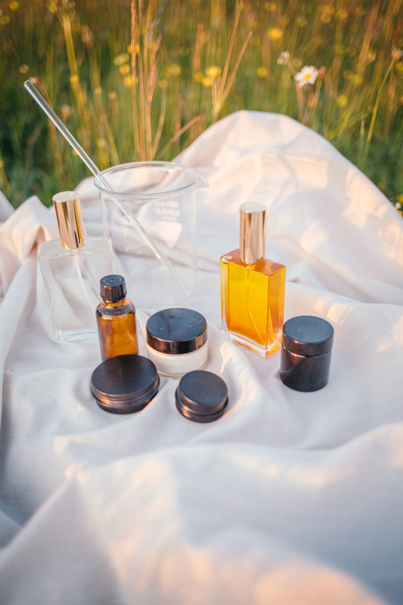

Die Kraft der Pflanzen — als reines Öl.
Ich nutze reine ätherische Öle von dōTERRA in meinem Alltag und gebe mein Wissen ehrlich weiter — mit Freude an der Pflanze und ganz ohne große Versprechen. Wenn dich das Thema neugierig macht, zeige ich dir gern, wie es sich anfühlt.

„Pflanzen möchten mit uns in Kontakt sein."
Hochkonzentrierte Essenzen der Pflanze
Ätherische Öle sind die hochkonzentrierten, flüchtigen Essenzen einer Pflanze — das, was du riechst, wenn du an einem Lavendelfeld vorbeigehst oder eine Tannennadel zwischen den Fingern zerreibst. In einem einzigen Tropfen steckt die Aromakraft vieler Blüten, Blätter oder Wurzeln.
Ich setze sie ganz alltagsnah ein: als Raumduft, der eine Stimmung trägt, für kleine Momente des Wohlbefindens und für Naturkosmetik, die ich mir selbst mische. Für mich sind sie eine schöne Art, die Pflanzen auch dann bei mir zu haben, wenn draußen längst Winter ist.
Ich arbeite mit den reinen Ölen von dōTERRA, weil mir Qualität und Herkunft wichtig sind. Wenn dich das Thema neugierig macht, teile ich mein Wissen gern — in Ruhe, verständlich und ohne Druck.
Ätherische Öle, ehrlich erklärt
Neugierig auf ätherische Öle?
Ganz unverbindlich: Ich zeige dir, wie du reine Öle in deinen Alltag holst, und beantworte deine Fragen ehrlich und in Ruhe.